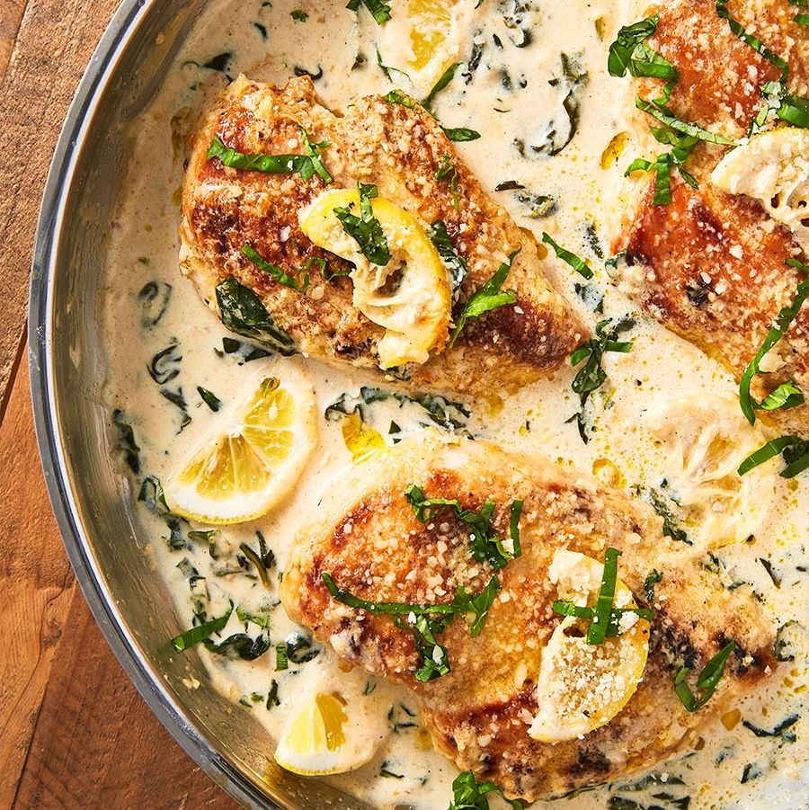

Creamy Lemon Parmesan Chicken

Description
A delightful blend of tender chicken, zesty lemon, and creamy Parmesan
creates a flavorful and comforting dish.
Perfect for any occasion, this recipe promises juicy chicken in a rich,
tangy sauce that's simply irresistible.
Ingredients
- 4 boneless, skinless chicken breasts (about 600g)
- Juice of 1 large lemon (about 2-3 tablespoons)
- 1/2 cup grated Parmesan cheese (about 50g)
- 1 cup heavy cream (240ml)
- 2 cloves garlic, minced
Steps
-
Season chicken breasts with salt and pepper. Cook in a skillet over
medium heat until golden brown and cooked through, about 6-7 minutes per
side. Remove and set aside.
-
In the same skillet, add minced garlic and cook for 1 minute until
fragrant. Pour in heavy cream, lemon juice, and Parmesan cheese. Stir
until the sauce thickens slightly, about 2-3 minutes.
-
Return chicken breasts to the skillet, spooning the sauce over them.
Simmer for 2-3 minutes to allow flavors to meld.
-
Plate the chicken and drizzle with extra sauce. Garnish with fresh
parsley or lemon slices if desired.
-
Serve hot with pasta, rice, or vegetables. Enjoy your creamy lemon
Parmesan chicken!
Home